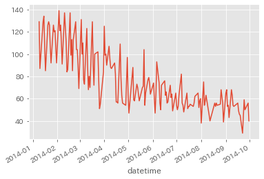
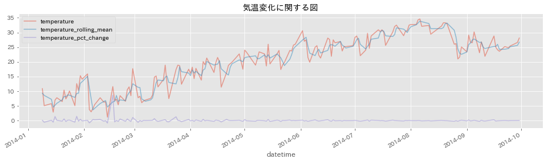
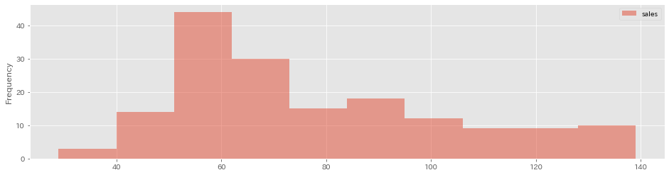
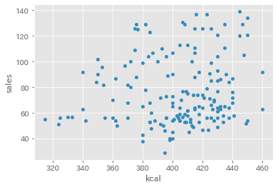
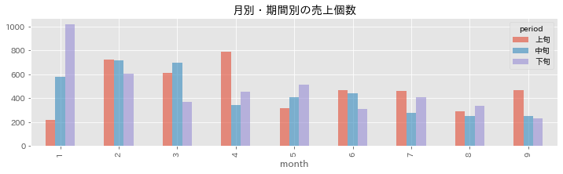

7. Pandas基本操作¶
7.1. Pythonのバージョン確認、モジュールのimport、データの読み込み¶
[62]:
!python -V
Python 3.7.0
[63]:
import pandas as pd
import matplotlib.pyplot as plt
import japanize_matplotlib
Requirement already satisfied: japanize-matplotlib in /root/.pyenv/versions/3.7.0/lib/python3.7/site-packages (1.0.5)
[64]:
df = pd.read_csv('./data/lunch_box.csv', sep=',')
[65]:
df.head(3)
[65]:
| datetime | y | week | soldout | name | kcal | remarks | event | payday | weather | precipitation | temperature | |
|---|---|---|---|---|---|---|---|---|---|---|---|---|
| 0 | 2013-11-18 | 90 | 月 | 0 | 厚切りイカフライ | NaN | NaN | NaN | NaN | 快晴 | -- | 19.8 |
| 1 | 2013-11-19 | 101 | 火 | 1 | 手作りヒレカツ | NaN | NaN | NaN | NaN | 快晴 | -- | 17.0 |
| 2 | 2013-11-20 | 118 | 水 | 0 | 白身魚唐揚げ野菜あん | NaN | NaN | NaN | NaN | 快晴 | -- | 15.5 |
[66]:
df.head()
[66]:
| datetime | y | week | soldout | name | kcal | remarks | event | payday | weather | precipitation | temperature | |
|---|---|---|---|---|---|---|---|---|---|---|---|---|
| 0 | 2013-11-18 | 90 | 月 | 0 | 厚切りイカフライ | NaN | NaN | NaN | NaN | 快晴 | -- | 19.8 |
| 1 | 2013-11-19 | 101 | 火 | 1 | 手作りヒレカツ | NaN | NaN | NaN | NaN | 快晴 | -- | 17.0 |
| 2 | 2013-11-20 | 118 | 水 | 0 | 白身魚唐揚げ野菜あん | NaN | NaN | NaN | NaN | 快晴 | -- | 15.5 |
| 3 | 2013-11-21 | 120 | 木 | 1 | 若鶏ピリ辛焼 | NaN | NaN | NaN | NaN | 快晴 | -- | 15.2 |
| 4 | 2013-11-22 | 130 | 金 | 1 | ビッグメンチカツ | NaN | NaN | NaN | NaN | 快晴 | -- | 16.1 |
[67]:
df.tail()
[67]:
| datetime | y | week | soldout | name | kcal | remarks | event | payday | weather | precipitation | temperature | |
|---|---|---|---|---|---|---|---|---|---|---|---|---|
| 202 | 2014-9-24 | 59 | 水 | 1 | 白身魚のマスタード焼き | 408.0 | NaN | NaN | NaN | 曇 | 0 | 24.8 |
| 203 | 2014-9-25 | 50 | 木 | 0 | 牛カルビ焼き肉 | 394.0 | NaN | NaN | NaN | 曇 | 0 | 25.4 |
| 204 | 2014-9-26 | 45 | 金 | 0 | ランチビュッフェ | NaN | スペシャルメニュー（800円） | キャリアアップ支援セミナー | NaN | 晴れ | -- | 27.1 |
| 205 | 2014-9-29 | 56 | 月 | 1 | 豚肉と玉子の炒め | 404.0 | NaN | NaN | NaN | 快晴 | -- | 26.6 |
| 206 | 2014-9-30 | 40 | 火 | 0 | 鶏肉とカシューナッツ炒め | 398.0 | NaN | NaN | NaN | 快晴 | -- | 28.1 |
7.2. 簡単にデータの状態を確認する¶
[68]:
print('dataframeの行数・列数の確認==>\n', df.shape)
print('indexの確認==>\n', df.index)
print('columnの確認==>\n', df.columns)
print('dataframeの各列のデータ型を確認==>\n', df.dtypes)
dataframeの行数・列数の確認==>
(207, 12)
indexの確認==>
RangeIndex(start=0, stop=207, step=1)
columnの確認==>
Index(['datetime', 'y', 'week', 'soldout', 'name', 'kcal', 'remarks', 'event',
'payday', 'weather', 'precipitation', 'temperature'],
dtype='object')
dataframeの各列のデータ型を確認==>
datetime object
y int64
week object
soldout int64
name object
kcal float64
remarks object
event object
payday float64
weather object
precipitation object
temperature float64
dtype: object
[69]:
df[['name','kcal']]
[69]:
| name | kcal | |
|---|---|---|
| 0 | 厚切りイカフライ | NaN |
| 1 | 手作りヒレカツ | NaN |
| 2 | 白身魚唐揚げ野菜あん | NaN |
| 3 | 若鶏ピリ辛焼 | NaN |
| 4 | ビッグメンチカツ | NaN |
| ... | ... | ... |
| 202 | 白身魚のマスタード焼き | 408.0 |
| 203 | 牛カルビ焼き肉 | 394.0 |
| 204 | ランチビュッフェ | NaN |
| 205 | 豚肉と玉子の炒め | 404.0 |
| 206 | 鶏肉とカシューナッツ炒め | 398.0 |
207 rows × 2 columns
[70]:
df[100:106]
[70]:
| datetime | y | week | soldout | name | kcal | remarks | event | payday | weather | precipitation | temperature | |
|---|---|---|---|---|---|---|---|---|---|---|---|---|
| 100 | 2014-4-22 | 78 | 火 | 1 | マーボ豆腐 | 382.0 | NaN | NaN | NaN | 曇 | -- | 18.8 |
| 101 | 2014-4-23 | 63 | 水 | 0 | 手作りひれかつ | 340.0 | NaN | NaN | NaN | 快晴 | -- | 19.4 |
| 102 | 2014-4-24 | 56 | 木 | 1 | 鶏の照り焼きマヨ | 360.0 | NaN | NaN | NaN | 晴れ | -- | 19.9 |
| 103 | 2014-4-25 | 80 | 金 | 0 | 中華丼 | NaN | お楽しみメニュー | NaN | NaN | 晴れ | -- | 20.8 |
| 104 | 2014-4-28 | 54 | 月 | 0 | タンドリーチキン | 342.0 | NaN | NaN | NaN | 晴れ | -- | 22.7 |
| 105 | 2014-4-30 | 97 | 水 | 1 | 豚味噌メンチカツ | 368.0 | NaN | NaN | NaN | 雨 | 0.5 | 17.5 |
[71]:
df.loc[100]
[71]:
datetime 2014-4-22
y 78
week 火
soldout 1
name マーボ豆腐
kcal 382
remarks NaN
event NaN
payday NaN
weather 曇
precipitation --
temperature 18.8
Name: 100, dtype: object
[72]:
df.iloc[[1,2,4],[0,2]]
[72]:
| datetime | week | |
|---|---|---|
| 1 | 2013-11-19 | 火 |
| 2 | 2013-11-20 | 水 |
| 4 | 2013-11-22 | 金 |
[73]:
df[['name','kcal']].query('kcal > 450 and name == "豚肉の生姜焼"')
[73]:
| name | kcal | |
|---|---|---|
| 29 | 豚肉の生姜焼 | 462.0 |
[74]:
df['remarks'].unique()
[74]:
array([nan, '鶏のレモンペッパー焼（50食）、カレー（42食）', '酢豚（28食）、カレー（85食）', 'お楽しみメニュー',
'料理長のこだわりメニュー', '手作りの味', 'スペシャルメニュー（800円）'], dtype=object)
[75]:
len(df) == len(df['datetime'].unique())
[75]:
True
[76]:
df.drop_duplicates()
df.shape
[76]:
(207, 12)
[77]:
df.describe()
[77]:
| y | soldout | kcal | payday | temperature | |
|---|---|---|---|---|---|
| count | 207.000000 | 207.000000 | 166.000000 | 10.0 | 207.000000 |
| mean | 86.623188 | 0.449275 | 404.409639 | 1.0 | 19.252174 |
| std | 32.882448 | 0.498626 | 29.884641 | 0.0 | 8.611365 |
| min | 29.000000 | 0.000000 | 315.000000 | 1.0 | 1.200000 |
| 25% | 57.000000 | 0.000000 | 386.000000 | 1.0 | 11.550000 |
| 50% | 78.000000 | 0.000000 | 408.500000 | 1.0 | 19.800000 |
| 75% | 113.000000 | 1.000000 | 426.000000 | 1.0 | 26.100000 |
| max | 171.000000 | 1.000000 | 462.000000 | 1.0 | 34.600000 |
7.3. データの整形¶
[78]:
df.set_index('datetime', inplace=True)
df.head()
[78]:
| y | week | soldout | name | kcal | remarks | event | payday | weather | precipitation | temperature | |
|---|---|---|---|---|---|---|---|---|---|---|---|
| datetime | |||||||||||
| 2013-11-18 | 90 | 月 | 0 | 厚切りイカフライ | NaN | NaN | NaN | NaN | 快晴 | -- | 19.8 |
| 2013-11-19 | 101 | 火 | 1 | 手作りヒレカツ | NaN | NaN | NaN | NaN | 快晴 | -- | 17.0 |
| 2013-11-20 | 118 | 水 | 0 | 白身魚唐揚げ野菜あん | NaN | NaN | NaN | NaN | 快晴 | -- | 15.5 |
| 2013-11-21 | 120 | 木 | 1 | 若鶏ピリ辛焼 | NaN | NaN | NaN | NaN | 快晴 | -- | 15.2 |
| 2013-11-22 | 130 | 金 | 1 | ビッグメンチカツ | NaN | NaN | NaN | NaN | 快晴 | -- | 16.1 |
[79]:
df.index
[79]:
Index(['2013-11-18', '2013-11-19', '2013-11-20', '2013-11-21', '2013-11-22',
'2013-11-25', '2013-11-26', '2013-11-27', '2013-11-28', '2013-11-29',
...
'2014-9-16', '2014-9-17', '2014-9-18', '2014-9-19', '2014-9-22',
'2014-9-24', '2014-9-25', '2014-9-26', '2014-9-29', '2014-9-30'],
dtype='object', name='datetime', length=207)
[80]:
df.rename(columns={'y':'sales'}, inplace=True)
df.head()
[80]:
| sales | week | soldout | name | kcal | remarks | event | payday | weather | precipitation | temperature | |
|---|---|---|---|---|---|---|---|---|---|---|---|
| datetime | |||||||||||
| 2013-11-18 | 90 | 月 | 0 | 厚切りイカフライ | NaN | NaN | NaN | NaN | 快晴 | -- | 19.8 |
| 2013-11-19 | 101 | 火 | 1 | 手作りヒレカツ | NaN | NaN | NaN | NaN | 快晴 | -- | 17.0 |
| 2013-11-20 | 118 | 水 | 0 | 白身魚唐揚げ野菜あん | NaN | NaN | NaN | NaN | 快晴 | -- | 15.5 |
| 2013-11-21 | 120 | 木 | 1 | 若鶏ピリ辛焼 | NaN | NaN | NaN | NaN | 快晴 | -- | 15.2 |
| 2013-11-22 | 130 | 金 | 1 | ビッグメンチカツ | NaN | NaN | NaN | NaN | 快晴 | -- | 16.1 |
[81]:
df.sort_values(by="sales", ascending=True).head()
[81]:
| sales | week | soldout | name | kcal | remarks | event | payday | weather | precipitation | temperature | |
|---|---|---|---|---|---|---|---|---|---|---|---|
| datetime | |||||||||||
| 2014-9-22 | 29 | 月 | 0 | 筑前煮 | 395.0 | NaN | NaN | NaN | 晴れ | -- | 25.2 |
| 2014-8-1 | 38 | 金 | 0 | 豚肉の生姜焼き | 380.0 | NaN | NaN | NaN | 薄曇 | -- | 32.7 |
| 2014-8-29 | 39 | 金 | 0 | チキンの辛味噌焼き | 398.0 | NaN | NaN | NaN | 曇 | 0 | 25.1 |
| 2014-9-30 | 40 | 火 | 0 | 鶏肉とカシューナッツ炒め | 398.0 | NaN | NaN | NaN | 快晴 | -- | 28.1 |
| 2014-8-12 | 40 | 火 | 1 | 厚切ハムカツ | 400.0 | NaN | NaN | NaN | 雨 | 0 | 29.4 |
[82]:
df.sort_values(['sales', 'temperature'], ascending=False).head()
[82]:
| sales | week | soldout | name | kcal | remarks | event | payday | weather | precipitation | temperature | |
|---|---|---|---|---|---|---|---|---|---|---|---|
| datetime | |||||||||||
| 2013-12-5 | 171 | 木 | 0 | 鶏のカッシュナッツ炒め | NaN | NaN | NaN | NaN | 快晴 | -- | 13.8 |
| 2013-12-9 | 165 | 月 | 1 | ハンバーグデミソース | NaN | NaN | NaN | NaN | 曇 | -- | 9.1 |
| 2013-12-16 | 160 | 月 | 0 | カキフライタルタル | NaN | NaN | NaN | NaN | 快晴 | -- | 11.3 |
| 2013-12-11 | 157 | 水 | 0 | 五目御飯 | NaN | NaN | NaN | NaN | 曇 | -- | 11.0 |
| 2013-12-10 | 155 | 火 | 0 | やわらかロースのサムジョン | NaN | NaN | NaN | 1.0 | 曇 | 0.5 | 7.1 |
[83]:
df.index
[83]:
Index(['2013-11-18', '2013-11-19', '2013-11-20', '2013-11-21', '2013-11-22',
'2013-11-25', '2013-11-26', '2013-11-27', '2013-11-28', '2013-11-29',
...
'2014-9-16', '2014-9-17', '2014-9-18', '2014-9-19', '2014-9-22',
'2014-9-24', '2014-9-25', '2014-9-26', '2014-9-29', '2014-9-30'],
dtype='object', name='datetime', length=207)
[84]:
df.index = pd.to_datetime(df.index, format='%Y-%m-%d')
[85]:
df.index
[85]:
DatetimeIndex(['2013-11-18', '2013-11-19', '2013-11-20', '2013-11-21',
'2013-11-22', '2013-11-25', '2013-11-26', '2013-11-27',
'2013-11-28', '2013-11-29',
...
'2014-09-16', '2014-09-17', '2014-09-18', '2014-09-19',
'2014-09-22', '2014-09-24', '2014-09-25', '2014-09-26',
'2014-09-29', '2014-09-30'],
dtype='datetime64[ns]', name='datetime', length=207, freq=None)
[86]:
df.sort_index().head()
[86]:
| sales | week | soldout | name | kcal | remarks | event | payday | weather | precipitation | temperature | |
|---|---|---|---|---|---|---|---|---|---|---|---|
| datetime | |||||||||||
| 2013-11-18 | 90 | 月 | 0 | 厚切りイカフライ | NaN | NaN | NaN | NaN | 快晴 | -- | 19.8 |
| 2013-11-19 | 101 | 火 | 1 | 手作りヒレカツ | NaN | NaN | NaN | NaN | 快晴 | -- | 17.0 |
| 2013-11-20 | 118 | 水 | 0 | 白身魚唐揚げ野菜あん | NaN | NaN | NaN | NaN | 快晴 | -- | 15.5 |
| 2013-11-21 | 120 | 木 | 1 | 若鶏ピリ辛焼 | NaN | NaN | NaN | NaN | 快晴 | -- | 15.2 |
| 2013-11-22 | 130 | 金 | 1 | ビッグメンチカツ | NaN | NaN | NaN | NaN | 快晴 | -- | 16.1 |
[87]:
df.resample('M').mean()
[87]:
| sales | soldout | kcal | payday | temperature | |
|---|---|---|---|---|---|
| datetime | |||||
| 2013-11-30 | 124.600000 | 0.500000 | NaN | NaN | 16.060000 |
| 2013-12-31 | 139.722222 | 0.444444 | NaN | 1.0 | 10.844444 |
| 2014-01-31 | 115.222222 | 0.611111 | 427.555556 | 1.0 | 8.716667 |
| 2014-02-28 | 107.842105 | 0.526316 | 420.947368 | 1.0 | 7.815789 |
| 2014-03-31 | 89.350000 | 0.450000 | 382.157895 | 1.0 | 12.505000 |
| 2014-04-30 | 85.761905 | 0.476190 | 360.000000 | 1.0 | 18.176190 |
| 2014-05-31 | 74.200000 | 0.550000 | 419.111111 | 1.0 | 22.505000 |
| 2014-06-30 | 67.285714 | 0.333333 | 423.315789 | 1.0 | 25.409524 |
| 2014-07-31 | 61.363636 | 0.454545 | 397.200000 | 1.0 | 29.350000 |
| 2014-08-31 | 61.166667 | 0.333333 | 403.187500 | 1.0 | 30.227778 |
| 2014-09-30 | 55.550000 | 0.300000 | 408.611111 | 1.0 | 25.935000 |
[88]:
df['month'] = list(pd.Series(df.index).apply(lambda x: x.month))
df['day'] = list(pd.Series(df.index).apply(lambda x: x.day))
df.head()
[88]:
| sales | week | soldout | name | kcal | remarks | event | payday | weather | precipitation | temperature | month | day | |
|---|---|---|---|---|---|---|---|---|---|---|---|---|---|
| datetime | |||||||||||||
| 2013-11-18 | 90 | 月 | 0 | 厚切りイカフライ | NaN | NaN | NaN | NaN | 快晴 | -- | 19.8 | 11 | 18 |
| 2013-11-19 | 101 | 火 | 1 | 手作りヒレカツ | NaN | NaN | NaN | NaN | 快晴 | -- | 17.0 | 11 | 19 |
| 2013-11-20 | 118 | 水 | 0 | 白身魚唐揚げ野菜あん | NaN | NaN | NaN | NaN | 快晴 | -- | 15.5 | 11 | 20 |
| 2013-11-21 | 120 | 木 | 1 | 若鶏ピリ辛焼 | NaN | NaN | NaN | NaN | 快晴 | -- | 15.2 | 11 | 21 |
| 2013-11-22 | 130 | 金 | 1 | ビッグメンチカツ | NaN | NaN | NaN | NaN | 快晴 | -- | 16.1 | 11 | 22 |
[89]:
labels = ['上旬', '中旬', '下旬']
df['period'] = pd.cut(list(df['day']), bins=[0,10,20,31], labels=labels, right=True) # 0<day≦10, 10<day≦20, 20<day≦31
df.head()
[89]:
| sales | week | soldout | name | kcal | remarks | event | payday | weather | precipitation | temperature | month | day | period | |
|---|---|---|---|---|---|---|---|---|---|---|---|---|---|---|
| datetime | ||||||||||||||
| 2013-11-18 | 90 | 月 | 0 | 厚切りイカフライ | NaN | NaN | NaN | NaN | 快晴 | -- | 19.8 | 11 | 18 | 中旬 |
| 2013-11-19 | 101 | 火 | 1 | 手作りヒレカツ | NaN | NaN | NaN | NaN | 快晴 | -- | 17.0 | 11 | 19 | 中旬 |
| 2013-11-20 | 118 | 水 | 0 | 白身魚唐揚げ野菜あん | NaN | NaN | NaN | NaN | 快晴 | -- | 15.5 | 11 | 20 | 中旬 |
| 2013-11-21 | 120 | 木 | 1 | 若鶏ピリ辛焼 | NaN | NaN | NaN | NaN | 快晴 | -- | 15.2 | 11 | 21 | 下旬 |
| 2013-11-22 | 130 | 金 | 1 | ビッグメンチカツ | NaN | NaN | NaN | NaN | 快晴 | -- | 16.1 | 11 | 22 | 下旬 |
7.4. データの欠損状態の確認¶
[90]:
df.isnull().sum()
[90]:
sales 0
week 0
soldout 0
name 0
kcal 41
remarks 186
event 193
payday 197
weather 0
precipitation 0
temperature 0
month 0
day 0
period 0
dtype: int64
[91]:
print(df[df.isnull().any(axis=1)].shape)
df[df.isnull().any(axis=1)].head()
(207, 14)
[91]:
| sales | week | soldout | name | kcal | remarks | event | payday | weather | precipitation | temperature | month | day | period | |
|---|---|---|---|---|---|---|---|---|---|---|---|---|---|---|
| datetime | ||||||||||||||
| 2013-11-18 | 90 | 月 | 0 | 厚切りイカフライ | NaN | NaN | NaN | NaN | 快晴 | -- | 19.8 | 11 | 18 | 中旬 |
| 2013-11-19 | 101 | 火 | 1 | 手作りヒレカツ | NaN | NaN | NaN | NaN | 快晴 | -- | 17.0 | 11 | 19 | 中旬 |
| 2013-11-20 | 118 | 水 | 0 | 白身魚唐揚げ野菜あん | NaN | NaN | NaN | NaN | 快晴 | -- | 15.5 | 11 | 20 | 中旬 |
| 2013-11-21 | 120 | 木 | 1 | 若鶏ピリ辛焼 | NaN | NaN | NaN | NaN | 快晴 | -- | 15.2 | 11 | 21 | 下旬 |
| 2013-11-22 | 130 | 金 | 1 | ビッグメンチカツ | NaN | NaN | NaN | NaN | 快晴 | -- | 16.1 | 11 | 22 | 下旬 |
7.5. 値(欠損)の置き換えや削除¶
[92]:
df.fillna(value={'payday': 0.0},inplace=True)
df.head()
[92]:
| sales | week | soldout | name | kcal | remarks | event | payday | weather | precipitation | temperature | month | day | period | |
|---|---|---|---|---|---|---|---|---|---|---|---|---|---|---|
| datetime | ||||||||||||||
| 2013-11-18 | 90 | 月 | 0 | 厚切りイカフライ | NaN | NaN | NaN | 0.0 | 快晴 | -- | 19.8 | 11 | 18 | 中旬 |
| 2013-11-19 | 101 | 火 | 1 | 手作りヒレカツ | NaN | NaN | NaN | 0.0 | 快晴 | -- | 17.0 | 11 | 19 | 中旬 |
| 2013-11-20 | 118 | 水 | 0 | 白身魚唐揚げ野菜あん | NaN | NaN | NaN | 0.0 | 快晴 | -- | 15.5 | 11 | 20 | 中旬 |
| 2013-11-21 | 120 | 木 | 1 | 若鶏ピリ辛焼 | NaN | NaN | NaN | 0.0 | 快晴 | -- | 15.2 | 11 | 21 | 下旬 |
| 2013-11-22 | 130 | 金 | 1 | ビッグメンチカツ | NaN | NaN | NaN | 0.0 | 快晴 | -- | 16.1 | 11 | 22 | 下旬 |
[93]:
df.isnull().sum()
[93]:
sales 0
week 0
soldout 0
name 0
kcal 41
remarks 186
event 193
payday 0
weather 0
precipitation 0
temperature 0
month 0
day 0
period 0
dtype: int64
[94]:
df.dropna(subset=['kcal'], axis=0, inplace=True)
df.shape
[94]:
(166, 14)
[95]:
df.isnull().sum()
[95]:
sales 0
week 0
soldout 0
name 0
kcal 0
remarks 158
event 155
payday 0
weather 0
precipitation 0
temperature 0
month 0
day 0
period 0
dtype: int64
[96]:
df['precipitation'] = df['precipitation'].str.replace('--', '0').astype(float)
df.head()
[96]:
| sales | week | soldout | name | kcal | remarks | event | payday | weather | precipitation | temperature | month | day | period | |
|---|---|---|---|---|---|---|---|---|---|---|---|---|---|---|
| datetime | ||||||||||||||
| 2014-01-07 | 131 | 火 | 0 | カレー入りソーセージカツ | 404.0 | NaN | NaN | 0.0 | 快晴 | 0.0 | 7.3 | 1 | 7 | 上旬 |
| 2014-01-08 | 128 | 水 | 0 | 豚肉の生姜焼 | 462.0 | NaN | NaN | 0.0 | 曇 | 0.0 | 9.8 | 1 | 8 | 上旬 |
| 2014-01-09 | 129 | 木 | 1 | 鶏チリソース | 435.0 | NaN | NaN | 0.0 | 曇 | 0.0 | 10.9 | 1 | 9 | 上旬 |
| 2014-01-10 | 87 | 金 | 0 | 手作りロースカツ | 440.0 | NaN | NaN | 1.0 | 快晴 | 0.0 | 5.1 | 1 | 10 | 上旬 |
| 2014-01-14 | 129 | 火 | 1 | 鶏の照り焼きマスタード | 376.0 | NaN | NaN | 0.0 | 晴れ | 0.0 | 5.8 | 1 | 14 | 中旬 |
[97]:
pd.DataFrame(df['sales'].mask(df['sales'] > 80, 100)).head()
[97]:
| sales | |
|---|---|
| datetime | |
| 2014-01-07 | 100 |
| 2014-01-08 | 100 |
| 2014-01-09 | 100 |
| 2014-01-10 | 100 |
| 2014-01-14 | 100 |
[98]:
df.drop(['remarks'], axis=1, inplace=True)
df.head()
[98]:
| sales | week | soldout | name | kcal | event | payday | weather | precipitation | temperature | month | day | period | |
|---|---|---|---|---|---|---|---|---|---|---|---|---|---|
| datetime | |||||||||||||
| 2014-01-07 | 131 | 火 | 0 | カレー入りソーセージカツ | 404.0 | NaN | 0.0 | 快晴 | 0.0 | 7.3 | 1 | 7 | 上旬 |
| 2014-01-08 | 128 | 水 | 0 | 豚肉の生姜焼 | 462.0 | NaN | 0.0 | 曇 | 0.0 | 9.8 | 1 | 8 | 上旬 |
| 2014-01-09 | 129 | 木 | 1 | 鶏チリソース | 435.0 | NaN | 0.0 | 曇 | 0.0 | 10.9 | 1 | 9 | 上旬 |
| 2014-01-10 | 87 | 金 | 0 | 手作りロースカツ | 440.0 | NaN | 1.0 | 快晴 | 0.0 | 5.1 | 1 | 10 | 上旬 |
| 2014-01-14 | 129 | 火 | 1 | 鶏の照り焼きマスタード | 376.0 | NaN | 0.0 | 晴れ | 0.0 | 5.8 | 1 | 14 | 中旬 |
7.6. 集計¶
[99]:
df['weather'].value_counts()
[99]:
曇 44
晴れ 41
快晴 34
薄曇 23
雨 22
雷電 1
雪 1
Name: weather, dtype: int64
[100]:
df.groupby(['week'])['soldout'].count()
[100]:
week
月 34
木 37
水 37
火 35
金 23
Name: soldout, dtype: int64
[101]:
df.groupby(['month', 'period'])['sales'].sum()
[101]:
month period
1 上旬 475
中旬 581
下旬 1018
2 上旬 725
中旬 715
下旬 609
3 上旬 614
中旬 698
下旬 369
4 上旬 792
中旬 344
下旬 457
5 上旬 316
中旬 406
下旬 517
6 上旬 467
中旬 440
下旬 311
7 上旬 460
中旬 277
下旬 406
8 上旬 288
中旬 250
下旬 334
9 上旬 468
中旬 249
下旬 234
Name: sales, dtype: int64
[102]:
df.groupby(['weather'])['temperature'].mean()
[102]:
weather
快晴 15.294118
晴れ 22.558537
曇 19.377273
薄曇 23.926087
雨 18.813636
雪 1.200000
雷電 19.000000
Name: temperature, dtype: float64
[103]:
df['temperature_diff'] = df['temperature'].diff(periods=1)
df[['temperature', 'temperature_diff']].head()
[103]:
| temperature | temperature_diff | |
|---|---|---|
| datetime | ||
| 2014-01-07 | 7.3 | NaN |
| 2014-01-08 | 9.8 | 2.5 |
| 2014-01-09 | 10.9 | 1.1 |
| 2014-01-10 | 5.1 | -5.8 |
| 2014-01-14 | 5.8 | 0.7 |
[104]:
df['temperature_rolling_mean'] = df['temperature'].rolling(window=3).mean()
df[['temperature', 'temperature_diff', 'temperature_rolling_mean']].head()
[104]:
| temperature | temperature_diff | temperature_rolling_mean | |
|---|---|---|---|
| datetime | |||
| 2014-01-07 | 7.3 | NaN | NaN |
| 2014-01-08 | 9.8 | 2.5 | NaN |
| 2014-01-09 | 10.9 | 1.1 | 9.333333 |
| 2014-01-10 | 5.1 | -5.8 | 8.600000 |
| 2014-01-14 | 5.8 | 0.7 | 7.266667 |
[105]:
df['temperature_pct_change'] = df['temperature'].pct_change()
df[['temperature', 'temperature_diff', 'temperature_rolling_mean', 'temperature_pct_change']].head()
[105]:
| temperature | temperature_diff | temperature_rolling_mean | temperature_pct_change | |
|---|---|---|---|---|
| datetime | ||||
| 2014-01-07 | 7.3 | NaN | NaN | NaN |
| 2014-01-08 | 9.8 | 2.5 | NaN | 0.342466 |
| 2014-01-09 | 10.9 | 1.1 | 9.333333 | 0.112245 |
| 2014-01-10 | 5.1 | -5.8 | 8.600000 | -0.532110 |
| 2014-01-14 | 5.8 | 0.7 | 7.266667 | 0.137255 |
[106]:
df.dropna(subset=['temperature_diff', 'temperature_rolling_mean', 'temperature_pct_change'], axis=0, inplace=True)
[107]:
df.isnull().sum()
[107]:
sales 0
week 0
soldout 0
name 0
kcal 0
event 153
payday 0
weather 0
precipitation 0
temperature 0
month 0
day 0
period 0
temperature_diff 0
temperature_rolling_mean 0
temperature_pct_change 0
dtype: int64
[108]:
df.head()
[108]:
| sales | week | soldout | name | kcal | event | payday | weather | precipitation | temperature | month | day | period | temperature_diff | temperature_rolling_mean | temperature_pct_change | |
|---|---|---|---|---|---|---|---|---|---|---|---|---|---|---|---|---|
| datetime | ||||||||||||||||
| 2014-01-09 | 129 | 木 | 1 | 鶏チリソース | 435.0 | NaN | 0.0 | 曇 | 0.0 | 10.9 | 1 | 9 | 上旬 | 1.1 | 9.333333 | 0.112245 |
| 2014-01-10 | 87 | 金 | 0 | 手作りロースカツ | 440.0 | NaN | 1.0 | 快晴 | 0.0 | 5.1 | 1 | 10 | 上旬 | -5.8 | 8.600000 | -0.532110 |
| 2014-01-14 | 129 | 火 | 1 | 鶏の照り焼きマスタード | 376.0 | NaN | 0.0 | 晴れ | 0.0 | 5.8 | 1 | 14 | 中旬 | 0.7 | 7.266667 | 0.137255 |
| 2014-01-15 | 134 | 水 | 0 | さんま辛味焼 | 450.0 | NaN | 0.0 | 曇 | 0.0 | 2.9 | 1 | 15 | 中旬 | -2.9 | 4.600000 | -0.500000 |
| 2014-01-16 | 107 | 木 | 0 | カレイ唐揚げ野菜あんかけ | 415.0 | NaN | 0.0 | 快晴 | 0.0 | 7.0 | 1 | 16 | 中旬 | 4.1 | 5.233333 | 1.413793 |
7.7. 可視化¶
[109]:
%matplotlib inline
import matplotlib.pyplot as plt
plt.style.use('ggplot')
[110]:
df['sales'].plot()
[110]:
<matplotlib.axes._subplots.AxesSubplot at 0x7f76f4f04908>

[111]:
df.plot(y=['temperature', 'temperature_rolling_mean', 'temperature_pct_change'], figsize=(16,4), alpha=0.5)
plt.title('気温変化に関する図')
[111]:
Text(0.5, 1.0, '気温変化に関する図')

[112]:
df.plot(kind='hist', y='sales', bins=10, figsize=(16,4), alpha=0.5)
[112]:
<matplotlib.axes._subplots.AxesSubplot at 0x7f76f4eefcc0>

[113]:
df.plot(kind='scatter', x='kcal', y='sales')
[113]:
<matplotlib.axes._subplots.AxesSubplot at 0x7f76f4df24e0>

[114]:
df[['kcal', 'sales']].corr()
[114]:
| kcal | sales | |
|---|---|---|
| kcal | 1.000000 | 0.129521 |
| sales | 0.129521 | 1.000000 |
[115]:
monthly_df = pd.DataFrame(df.groupby(['month', 'period'])['sales'].sum())
pivot_monthly_df = monthly_df.reset_index().pivot(index='month', columns='period', values='sales')
pivot_monthly_df
[115]:
| period | 上旬 | 中旬 | 下旬 |
|---|---|---|---|
| month | |||
| 1 | 216 | 581 | 1018 |
| 2 | 725 | 715 | 609 |
| 3 | 614 | 698 | 369 |
| 4 | 792 | 344 | 457 |
| 5 | 316 | 406 | 517 |
| 6 | 467 | 440 | 311 |
| 7 | 460 | 277 | 406 |
| 8 | 288 | 250 | 334 |
| 9 | 468 | 249 | 234 |
[116]:
pivot_monthly_df.plot(kind='bar', alpha=0.6, figsize=(12,3))
plt.title('月別・期間別の売上個数')
[116]:
Text(0.5, 1.0, '月別・期間別の売上個数')

7.8. 変数の前処理¶
[117]:
print(df.columns)
len(df.columns)
Index(['sales', 'week', 'soldout', 'name', 'kcal', 'event', 'payday',
'weather', 'precipitation', 'temperature', 'month', 'day', 'period',
'temperature_diff', 'temperature_rolling_mean',
'temperature_pct_change'],
dtype='object')
[117]:
16
[118]:
dummy_df = pd.get_dummies(df, columns=['week', 'name', 'event', 'weather', 'period'])
dummy_df.head()
[118]:
| sales | soldout | kcal | payday | precipitation | temperature | month | day | temperature_diff | temperature_rolling_mean | temperature_pct_change | week_月 | week_木 | week_水 | week_火 | week_金 | name_いか天ぷら | name_かじきの甘辛煮 | name_きのこソースハンバーグ | name_さわら焼味噌掛け | name_さんま辛味焼 | name_たっぷりベーコンフライ | name_ぶりレモンペッパー焼き | name_ますのマスタードソース | name_アジ唐揚げ南蛮ソース | name_エビフライ | name_カレイの唐揚げ | name_カレイ唐揚げ 甘酢あん | name_カレイ唐揚げ夏野菜あん | name_カレイ唐揚げ野菜あんかけ | name_カレイ唐揚げ野菜餡かけ | name_カレイ野菜あんかけ | name_キスと野菜の天ぷら | name_キーマカレー | name_ゴーヤチャンプルー | name_サバ焼味噌掛け | name_サーモンのムニエル2色ソース | name_サーモンフライ・タルタル | name_ジャンボチキンカツ | name_ジューシーメンチカツ | name_タンドリーチキン | name_チキンのコーンクリーム焼き | name_チキンの辛味噌焼き | name_チキンクリームシチュー | name_チキンステーキ・きのこソース | name_チキンフリカッセ | name_チキン南蛮 | name_チキン香草焼きマスタードソース | name_チャプチェ | name_チンジャオロース | name_チーズハンバーグ | name_チーズメンチカツ | name_チーズ入りハンバーグ | name_チーズ入りメンチカツ | name_ハンバーグカレーソース | name_ハンバーグケッチャップソース | name_ハンバーグデミソース | name_ハンバーグ和風きのこソース | name_ハンバーグ（デミきのこバター） | name_バーベキューチキン | name_ビーフカレー | name_ビーフシチュー | name_ビーフストロガノフ | name_ビーフトマト煮 | name_プルコギ | name_ホタテクリ―ムシチュー | name_ボローニャ風カツ | name_ポークソテー韓国ソース | name_ポークハヤシ | name_ポーク生姜焼き | name_マーボ茄子 | name_マーボ豆腐 | name_メダイ照り焼 | name_メンチカツ | name_ロース甘味噌焼き | name_八宝菜 | name_厚切イカフライ | name_厚切ハムカツ | name_名古屋味噌カツ | name_和風ソースハンバーグ | name_和風ハンバーグ | name_回鍋肉 | name_手作りひれかつ | name_手作りひれかつとカレー | name_手作りチキンカツ | name_手作りトンカツ | name_手作りロースカツ | name_洋食屋さんのメンチカツ | name_海老クリーミ―クノーデル | name_海老フライとホタテ串カツ | name_海老フライタルタル | name_炊き込みご飯 | name_牛すき焼き風 | name_牛カルビ焼き肉 | name_牛スキヤキ | name_牛丼風煮 | name_牛肉すき焼き風 | name_牛肉コロッケ | name_牛肉ニンニクの芽炒め | name_牛肉筍煮 | name_白身魚のマスタード焼き | name_白身魚の南部焼き | name_白身魚フライ | name_白身魚ムニエル | name_白身魚唐揚げ野菜あんかけ | name_白身魚唐揚げ野菜餡かけ | name_筑前煮 | name_肉じゃが | name_肉団子のシチュー | name_肉団子クリームシチュー | name_親子煮 | name_豚すき焼き | name_豚の冷しゃぶ | name_豚キムチ炒め | name_豚ロースのピザ風チーズ焼き | name_豚冷シャブ野菜添え | name_豚味噌メンチカツ | name_豚肉と玉子の炒め | name_豚肉と茄子のピリ辛炒め | name_豚肉のマスタード焼き | name_豚肉の生姜焼き | name_豚肉の胡麻シャブ | name_越冬キャベツのメンチカツ | name_酢豚 | name_酢豚orカレー | name_青梗菜牛肉炒め | name_青椒肉絲 | name_鶏のから揚げねぎ塩炒めソース | name_鶏のから揚げスイートチリソース | name_鶏のカッシュナッツ炒め | name_鶏のトマトシチュー | name_鶏のピリ辛焼き | name_鶏のレモンペッパー焼orカレー | name_鶏の味噌漬け焼き | name_鶏の唐揚げ | name_鶏の唐揚げおろしソース | name_鶏の塩から揚げ | name_鶏の天ぷら | name_鶏の照り焼きマスタード | name_鶏の照り焼きマヨ | name_鶏の親子煮 | name_鶏チリソース | name_鶏肉とカシューナッツ炒め | name_鶏肉のカレー唐揚 | name_鶏肉の山賊焼き | event_キャリアアップ支援セミナー | event_ママの会 | weather_快晴 | weather_晴れ | weather_曇 | weather_薄曇 | weather_雨 | weather_雪 | weather_雷電 | period_上旬 | period_中旬 | period_下旬 | |
|---|---|---|---|---|---|---|---|---|---|---|---|---|---|---|---|---|---|---|---|---|---|---|---|---|---|---|---|---|---|---|---|---|---|---|---|---|---|---|---|---|---|---|---|---|---|---|---|---|---|---|---|---|---|---|---|---|---|---|---|---|---|---|---|---|---|---|---|---|---|---|---|---|---|---|---|---|---|---|---|---|---|---|---|---|---|---|---|---|---|---|---|---|---|---|---|---|---|---|---|---|---|---|---|---|---|---|---|---|---|---|---|---|---|---|---|---|---|---|---|---|---|---|---|---|---|---|---|---|---|---|---|---|---|---|---|---|---|---|---|---|---|---|---|---|---|---|---|---|---|---|---|---|---|---|---|---|---|
| datetime | |||||||||||||||||||||||||||||||||||||||||||||||||||||||||||||||||||||||||||||||||||||||||||||||||||||||||||||||||||||||||||||||||||||||||||||||||||||||||||||
| 2014-01-09 | 129 | 1 | 435.0 | 0.0 | 0.0 | 10.9 | 1 | 9 | 1.1 | 9.333333 | 0.112245 | 0 | 1 | 0 | 0 | 0 | 0 | 0 | 0 | 0 | 0 | 0 | 0 | 0 | 0 | 0 | 0 | 0 | 0 | 0 | 0 | 0 | 0 | 0 | 0 | 0 | 0 | 0 | 0 | 0 | 0 | 0 | 0 | 0 | 0 | 0 | 0 | 0 | 0 | 0 | 0 | 0 | 0 | 0 | 0 | 0 | 0 | 0 | 0 | 0 | 0 | 0 | 0 | 0 | 0 | 0 | 0 | 0 | 0 | 0 | 0 | 0 | 0 | 0 | 0 | 0 | 0 | 0 | 0 | 0 | 0 | 0 | 0 | 0 | 0 | 0 | 0 | 0 | 0 | 0 | 0 | 0 | 0 | 0 | 0 | 0 | 0 | 0 | 0 | 0 | 0 | 0 | 0 | 0 | 0 | 0 | 0 | 0 | 0 | 0 | 0 | 0 | 0 | 0 | 0 | 0 | 0 | 0 | 0 | 0 | 0 | 0 | 0 | 0 | 0 | 0 | 0 | 0 | 0 | 0 | 0 | 0 | 0 | 0 | 0 | 0 | 0 | 0 | 0 | 0 | 0 | 1 | 0 | 0 | 0 | 0 | 0 | 0 | 0 | 1 | 0 | 0 | 0 | 0 | 1 | 0 | 0 |
| 2014-01-10 | 87 | 0 | 440.0 | 1.0 | 0.0 | 5.1 | 1 | 10 | -5.8 | 8.600000 | -0.532110 | 0 | 0 | 0 | 0 | 1 | 0 | 0 | 0 | 0 | 0 | 0 | 0 | 0 | 0 | 0 | 0 | 0 | 0 | 0 | 0 | 0 | 0 | 0 | 0 | 0 | 0 | 0 | 0 | 0 | 0 | 0 | 0 | 0 | 0 | 0 | 0 | 0 | 0 | 0 | 0 | 0 | 0 | 0 | 0 | 0 | 0 | 0 | 0 | 0 | 0 | 0 | 0 | 0 | 0 | 0 | 0 | 0 | 0 | 0 | 0 | 0 | 0 | 0 | 0 | 0 | 0 | 0 | 0 | 0 | 0 | 0 | 0 | 0 | 0 | 0 | 1 | 0 | 0 | 0 | 0 | 0 | 0 | 0 | 0 | 0 | 0 | 0 | 0 | 0 | 0 | 0 | 0 | 0 | 0 | 0 | 0 | 0 | 0 | 0 | 0 | 0 | 0 | 0 | 0 | 0 | 0 | 0 | 0 | 0 | 0 | 0 | 0 | 0 | 0 | 0 | 0 | 0 | 0 | 0 | 0 | 0 | 0 | 0 | 0 | 0 | 0 | 0 | 0 | 0 | 0 | 0 | 0 | 0 | 0 | 0 | 0 | 1 | 0 | 0 | 0 | 0 | 0 | 0 | 1 | 0 | 0 |
| 2014-01-14 | 129 | 1 | 376.0 | 0.0 | 0.0 | 5.8 | 1 | 14 | 0.7 | 7.266667 | 0.137255 | 0 | 0 | 0 | 1 | 0 | 0 | 0 | 0 | 0 | 0 | 0 | 0 | 0 | 0 | 0 | 0 | 0 | 0 | 0 | 0 | 0 | 0 | 0 | 0 | 0 | 0 | 0 | 0 | 0 | 0 | 0 | 0 | 0 | 0 | 0 | 0 | 0 | 0 | 0 | 0 | 0 | 0 | 0 | 0 | 0 | 0 | 0 | 0 | 0 | 0 | 0 | 0 | 0 | 0 | 0 | 0 | 0 | 0 | 0 | 0 | 0 | 0 | 0 | 0 | 0 | 0 | 0 | 0 | 0 | 0 | 0 | 0 | 0 | 0 | 0 | 0 | 0 | 0 | 0 | 0 | 0 | 0 | 0 | 0 | 0 | 0 | 0 | 0 | 0 | 0 | 0 | 0 | 0 | 0 | 0 | 0 | 0 | 0 | 0 | 0 | 0 | 0 | 0 | 0 | 0 | 0 | 0 | 0 | 0 | 0 | 0 | 0 | 0 | 0 | 0 | 0 | 0 | 0 | 0 | 0 | 0 | 0 | 0 | 0 | 0 | 0 | 0 | 1 | 0 | 0 | 0 | 0 | 0 | 0 | 0 | 0 | 0 | 1 | 0 | 0 | 0 | 0 | 0 | 0 | 1 | 0 |
| 2014-01-15 | 134 | 0 | 450.0 | 0.0 | 0.0 | 2.9 | 1 | 15 | -2.9 | 4.600000 | -0.500000 | 0 | 0 | 1 | 0 | 0 | 0 | 0 | 0 | 0 | 1 | 0 | 0 | 0 | 0 | 0 | 0 | 0 | 0 | 0 | 0 | 0 | 0 | 0 | 0 | 0 | 0 | 0 | 0 | 0 | 0 | 0 | 0 | 0 | 0 | 0 | 0 | 0 | 0 | 0 | 0 | 0 | 0 | 0 | 0 | 0 | 0 | 0 | 0 | 0 | 0 | 0 | 0 | 0 | 0 | 0 | 0 | 0 | 0 | 0 | 0 | 0 | 0 | 0 | 0 | 0 | 0 | 0 | 0 | 0 | 0 | 0 | 0 | 0 | 0 | 0 | 0 | 0 | 0 | 0 | 0 | 0 | 0 | 0 | 0 | 0 | 0 | 0 | 0 | 0 | 0 | 0 | 0 | 0 | 0 | 0 | 0 | 0 | 0 | 0 | 0 | 0 | 0 | 0 | 0 | 0 | 0 | 0 | 0 | 0 | 0 | 0 | 0 | 0 | 0 | 0 | 0 | 0 | 0 | 0 | 0 | 0 | 0 | 0 | 0 | 0 | 0 | 0 | 0 | 0 | 0 | 0 | 0 | 0 | 0 | 0 | 0 | 0 | 0 | 1 | 0 | 0 | 0 | 0 | 0 | 1 | 0 |
| 2014-01-16 | 107 | 0 | 415.0 | 0.0 | 0.0 | 7.0 | 1 | 16 | 4.1 | 5.233333 | 1.413793 | 0 | 1 | 0 | 0 | 0 | 0 | 0 | 0 | 0 | 0 | 0 | 0 | 0 | 0 | 0 | 0 | 0 | 0 | 1 | 0 | 0 | 0 | 0 | 0 | 0 | 0 | 0 | 0 | 0 | 0 | 0 | 0 | 0 | 0 | 0 | 0 | 0 | 0 | 0 | 0 | 0 | 0 | 0 | 0 | 0 | 0 | 0 | 0 | 0 | 0 | 0 | 0 | 0 | 0 | 0 | 0 | 0 | 0 | 0 | 0 | 0 | 0 | 0 | 0 | 0 | 0 | 0 | 0 | 0 | 0 | 0 | 0 | 0 | 0 | 0 | 0 | 0 | 0 | 0 | 0 | 0 | 0 | 0 | 0 | 0 | 0 | 0 | 0 | 0 | 0 | 0 | 0 | 0 | 0 | 0 | 0 | 0 | 0 | 0 | 0 | 0 | 0 | 0 | 0 | 0 | 0 | 0 | 0 | 0 | 0 | 0 | 0 | 0 | 0 | 0 | 0 | 0 | 0 | 0 | 0 | 0 | 0 | 0 | 0 | 0 | 0 | 0 | 0 | 0 | 0 | 0 | 0 | 0 | 0 | 0 | 0 | 1 | 0 | 0 | 0 | 0 | 0 | 0 | 0 | 1 | 0 |
[119]:
pd.set_option('display.max_columns', 160)
[120]:
print(dummy_df.shape)
dummy_df.head()
(164, 157)
[120]:
| sales | soldout | kcal | payday | precipitation | temperature | month | day | temperature_diff | temperature_rolling_mean | temperature_pct_change | week_月 | week_木 | week_水 | week_火 | week_金 | name_いか天ぷら | name_かじきの甘辛煮 | name_きのこソースハンバーグ | name_さわら焼味噌掛け | name_さんま辛味焼 | name_たっぷりベーコンフライ | name_ぶりレモンペッパー焼き | name_ますのマスタードソース | name_アジ唐揚げ南蛮ソース | name_エビフライ | name_カレイの唐揚げ | name_カレイ唐揚げ 甘酢あん | name_カレイ唐揚げ夏野菜あん | name_カレイ唐揚げ野菜あんかけ | name_カレイ唐揚げ野菜餡かけ | name_カレイ野菜あんかけ | name_キスと野菜の天ぷら | name_キーマカレー | name_ゴーヤチャンプルー | name_サバ焼味噌掛け | name_サーモンのムニエル2色ソース | name_サーモンフライ・タルタル | name_ジャンボチキンカツ | name_ジューシーメンチカツ | name_タンドリーチキン | name_チキンのコーンクリーム焼き | name_チキンの辛味噌焼き | name_チキンクリームシチュー | name_チキンステーキ・きのこソース | name_チキンフリカッセ | name_チキン南蛮 | name_チキン香草焼きマスタードソース | name_チャプチェ | name_チンジャオロース | name_チーズハンバーグ | name_チーズメンチカツ | name_チーズ入りハンバーグ | name_チーズ入りメンチカツ | name_ハンバーグカレーソース | name_ハンバーグケッチャップソース | name_ハンバーグデミソース | name_ハンバーグ和風きのこソース | name_ハンバーグ（デミきのこバター） | name_バーベキューチキン | name_ビーフカレー | name_ビーフシチュー | name_ビーフストロガノフ | name_ビーフトマト煮 | name_プルコギ | name_ホタテクリ―ムシチュー | name_ボローニャ風カツ | name_ポークソテー韓国ソース | name_ポークハヤシ | name_ポーク生姜焼き | name_マーボ茄子 | name_マーボ豆腐 | name_メダイ照り焼 | name_メンチカツ | name_ロース甘味噌焼き | name_八宝菜 | name_厚切イカフライ | name_厚切ハムカツ | name_名古屋味噌カツ | name_和風ソースハンバーグ | name_和風ハンバーグ | name_回鍋肉 | name_手作りひれかつ | name_手作りひれかつとカレー | name_手作りチキンカツ | name_手作りトンカツ | name_手作りロースカツ | name_洋食屋さんのメンチカツ | name_海老クリーミ―クノーデル | name_海老フライとホタテ串カツ | name_海老フライタルタル | name_炊き込みご飯 | name_牛すき焼き風 | name_牛カルビ焼き肉 | name_牛スキヤキ | name_牛丼風煮 | name_牛肉すき焼き風 | name_牛肉コロッケ | name_牛肉ニンニクの芽炒め | name_牛肉筍煮 | name_白身魚のマスタード焼き | name_白身魚の南部焼き | name_白身魚フライ | name_白身魚ムニエル | name_白身魚唐揚げ野菜あんかけ | name_白身魚唐揚げ野菜餡かけ | name_筑前煮 | name_肉じゃが | name_肉団子のシチュー | name_肉団子クリームシチュー | name_親子煮 | name_豚すき焼き | name_豚の冷しゃぶ | name_豚キムチ炒め | name_豚ロースのピザ風チーズ焼き | name_豚冷シャブ野菜添え | name_豚味噌メンチカツ | name_豚肉と玉子の炒め | name_豚肉と茄子のピリ辛炒め | name_豚肉のマスタード焼き | name_豚肉の生姜焼き | name_豚肉の胡麻シャブ | name_越冬キャベツのメンチカツ | name_酢豚 | name_酢豚orカレー | name_青梗菜牛肉炒め | name_青椒肉絲 | name_鶏のから揚げねぎ塩炒めソース | name_鶏のから揚げスイートチリソース | name_鶏のカッシュナッツ炒め | name_鶏のトマトシチュー | name_鶏のピリ辛焼き | name_鶏のレモンペッパー焼orカレー | name_鶏の味噌漬け焼き | name_鶏の唐揚げ | name_鶏の唐揚げおろしソース | name_鶏の塩から揚げ | name_鶏の天ぷら | name_鶏の照り焼きマスタード | name_鶏の照り焼きマヨ | name_鶏の親子煮 | name_鶏チリソース | name_鶏肉とカシューナッツ炒め | name_鶏肉のカレー唐揚 | name_鶏肉の山賊焼き | event_キャリアアップ支援セミナー | event_ママの会 | weather_快晴 | weather_晴れ | weather_曇 | weather_薄曇 | weather_雨 | weather_雪 | weather_雷電 | period_上旬 | period_中旬 | period_下旬 | |
|---|---|---|---|---|---|---|---|---|---|---|---|---|---|---|---|---|---|---|---|---|---|---|---|---|---|---|---|---|---|---|---|---|---|---|---|---|---|---|---|---|---|---|---|---|---|---|---|---|---|---|---|---|---|---|---|---|---|---|---|---|---|---|---|---|---|---|---|---|---|---|---|---|---|---|---|---|---|---|---|---|---|---|---|---|---|---|---|---|---|---|---|---|---|---|---|---|---|---|---|---|---|---|---|---|---|---|---|---|---|---|---|---|---|---|---|---|---|---|---|---|---|---|---|---|---|---|---|---|---|---|---|---|---|---|---|---|---|---|---|---|---|---|---|---|---|---|---|---|---|---|---|---|---|---|---|---|---|
| datetime | |||||||||||||||||||||||||||||||||||||||||||||||||||||||||||||||||||||||||||||||||||||||||||||||||||||||||||||||||||||||||||||||||||||||||||||||||||||||||||||
| 2014-01-09 | 129 | 1 | 435.0 | 0.0 | 0.0 | 10.9 | 1 | 9 | 1.1 | 9.333333 | 0.112245 | 0 | 1 | 0 | 0 | 0 | 0 | 0 | 0 | 0 | 0 | 0 | 0 | 0 | 0 | 0 | 0 | 0 | 0 | 0 | 0 | 0 | 0 | 0 | 0 | 0 | 0 | 0 | 0 | 0 | 0 | 0 | 0 | 0 | 0 | 0 | 0 | 0 | 0 | 0 | 0 | 0 | 0 | 0 | 0 | 0 | 0 | 0 | 0 | 0 | 0 | 0 | 0 | 0 | 0 | 0 | 0 | 0 | 0 | 0 | 0 | 0 | 0 | 0 | 0 | 0 | 0 | 0 | 0 | 0 | 0 | 0 | 0 | 0 | 0 | 0 | 0 | 0 | 0 | 0 | 0 | 0 | 0 | 0 | 0 | 0 | 0 | 0 | 0 | 0 | 0 | 0 | 0 | 0 | 0 | 0 | 0 | 0 | 0 | 0 | 0 | 0 | 0 | 0 | 0 | 0 | 0 | 0 | 0 | 0 | 0 | 0 | 0 | 0 | 0 | 0 | 0 | 0 | 0 | 0 | 0 | 0 | 0 | 0 | 0 | 0 | 0 | 0 | 0 | 0 | 0 | 1 | 0 | 0 | 0 | 0 | 0 | 0 | 0 | 1 | 0 | 0 | 0 | 0 | 1 | 0 | 0 |
| 2014-01-10 | 87 | 0 | 440.0 | 1.0 | 0.0 | 5.1 | 1 | 10 | -5.8 | 8.600000 | -0.532110 | 0 | 0 | 0 | 0 | 1 | 0 | 0 | 0 | 0 | 0 | 0 | 0 | 0 | 0 | 0 | 0 | 0 | 0 | 0 | 0 | 0 | 0 | 0 | 0 | 0 | 0 | 0 | 0 | 0 | 0 | 0 | 0 | 0 | 0 | 0 | 0 | 0 | 0 | 0 | 0 | 0 | 0 | 0 | 0 | 0 | 0 | 0 | 0 | 0 | 0 | 0 | 0 | 0 | 0 | 0 | 0 | 0 | 0 | 0 | 0 | 0 | 0 | 0 | 0 | 0 | 0 | 0 | 0 | 0 | 0 | 0 | 0 | 0 | 0 | 0 | 1 | 0 | 0 | 0 | 0 | 0 | 0 | 0 | 0 | 0 | 0 | 0 | 0 | 0 | 0 | 0 | 0 | 0 | 0 | 0 | 0 | 0 | 0 | 0 | 0 | 0 | 0 | 0 | 0 | 0 | 0 | 0 | 0 | 0 | 0 | 0 | 0 | 0 | 0 | 0 | 0 | 0 | 0 | 0 | 0 | 0 | 0 | 0 | 0 | 0 | 0 | 0 | 0 | 0 | 0 | 0 | 0 | 0 | 0 | 0 | 0 | 1 | 0 | 0 | 0 | 0 | 0 | 0 | 1 | 0 | 0 |
| 2014-01-14 | 129 | 1 | 376.0 | 0.0 | 0.0 | 5.8 | 1 | 14 | 0.7 | 7.266667 | 0.137255 | 0 | 0 | 0 | 1 | 0 | 0 | 0 | 0 | 0 | 0 | 0 | 0 | 0 | 0 | 0 | 0 | 0 | 0 | 0 | 0 | 0 | 0 | 0 | 0 | 0 | 0 | 0 | 0 | 0 | 0 | 0 | 0 | 0 | 0 | 0 | 0 | 0 | 0 | 0 | 0 | 0 | 0 | 0 | 0 | 0 | 0 | 0 | 0 | 0 | 0 | 0 | 0 | 0 | 0 | 0 | 0 | 0 | 0 | 0 | 0 | 0 | 0 | 0 | 0 | 0 | 0 | 0 | 0 | 0 | 0 | 0 | 0 | 0 | 0 | 0 | 0 | 0 | 0 | 0 | 0 | 0 | 0 | 0 | 0 | 0 | 0 | 0 | 0 | 0 | 0 | 0 | 0 | 0 | 0 | 0 | 0 | 0 | 0 | 0 | 0 | 0 | 0 | 0 | 0 | 0 | 0 | 0 | 0 | 0 | 0 | 0 | 0 | 0 | 0 | 0 | 0 | 0 | 0 | 0 | 0 | 0 | 0 | 0 | 0 | 0 | 0 | 0 | 1 | 0 | 0 | 0 | 0 | 0 | 0 | 0 | 0 | 0 | 1 | 0 | 0 | 0 | 0 | 0 | 0 | 1 | 0 |
| 2014-01-15 | 134 | 0 | 450.0 | 0.0 | 0.0 | 2.9 | 1 | 15 | -2.9 | 4.600000 | -0.500000 | 0 | 0 | 1 | 0 | 0 | 0 | 0 | 0 | 0 | 1 | 0 | 0 | 0 | 0 | 0 | 0 | 0 | 0 | 0 | 0 | 0 | 0 | 0 | 0 | 0 | 0 | 0 | 0 | 0 | 0 | 0 | 0 | 0 | 0 | 0 | 0 | 0 | 0 | 0 | 0 | 0 | 0 | 0 | 0 | 0 | 0 | 0 | 0 | 0 | 0 | 0 | 0 | 0 | 0 | 0 | 0 | 0 | 0 | 0 | 0 | 0 | 0 | 0 | 0 | 0 | 0 | 0 | 0 | 0 | 0 | 0 | 0 | 0 | 0 | 0 | 0 | 0 | 0 | 0 | 0 | 0 | 0 | 0 | 0 | 0 | 0 | 0 | 0 | 0 | 0 | 0 | 0 | 0 | 0 | 0 | 0 | 0 | 0 | 0 | 0 | 0 | 0 | 0 | 0 | 0 | 0 | 0 | 0 | 0 | 0 | 0 | 0 | 0 | 0 | 0 | 0 | 0 | 0 | 0 | 0 | 0 | 0 | 0 | 0 | 0 | 0 | 0 | 0 | 0 | 0 | 0 | 0 | 0 | 0 | 0 | 0 | 0 | 0 | 1 | 0 | 0 | 0 | 0 | 0 | 1 | 0 |
| 2014-01-16 | 107 | 0 | 415.0 | 0.0 | 0.0 | 7.0 | 1 | 16 | 4.1 | 5.233333 | 1.413793 | 0 | 1 | 0 | 0 | 0 | 0 | 0 | 0 | 0 | 0 | 0 | 0 | 0 | 0 | 0 | 0 | 0 | 0 | 1 | 0 | 0 | 0 | 0 | 0 | 0 | 0 | 0 | 0 | 0 | 0 | 0 | 0 | 0 | 0 | 0 | 0 | 0 | 0 | 0 | 0 | 0 | 0 | 0 | 0 | 0 | 0 | 0 | 0 | 0 | 0 | 0 | 0 | 0 | 0 | 0 | 0 | 0 | 0 | 0 | 0 | 0 | 0 | 0 | 0 | 0 | 0 | 0 | 0 | 0 | 0 | 0 | 0 | 0 | 0 | 0 | 0 | 0 | 0 | 0 | 0 | 0 | 0 | 0 | 0 | 0 | 0 | 0 | 0 | 0 | 0 | 0 | 0 | 0 | 0 | 0 | 0 | 0 | 0 | 0 | 0 | 0 | 0 | 0 | 0 | 0 | 0 | 0 | 0 | 0 | 0 | 0 | 0 | 0 | 0 | 0 | 0 | 0 | 0 | 0 | 0 | 0 | 0 | 0 | 0 | 0 | 0 | 0 | 0 | 0 | 0 | 0 | 0 | 0 | 0 | 0 | 0 | 1 | 0 | 0 | 0 | 0 | 0 | 0 | 0 | 1 | 0 |
7.9. 最後に、出来たデータをもう一度眺める¶
[121]:
print(dummy_df.isnull().sum())
dummy_df.head()
sales 0
soldout 0
kcal 0
payday 0
precipitation 0
..
weather_雪 0
weather_雷電 0
period_上旬 0
period_中旬 0
period_下旬 0
Length: 157, dtype: int64
[121]:
| sales | soldout | kcal | payday | precipitation | temperature | month | day | temperature_diff | temperature_rolling_mean | temperature_pct_change | week_月 | week_木 | week_水 | week_火 | week_金 | name_いか天ぷら | name_かじきの甘辛煮 | name_きのこソースハンバーグ | name_さわら焼味噌掛け | name_さんま辛味焼 | name_たっぷりベーコンフライ | name_ぶりレモンペッパー焼き | name_ますのマスタードソース | name_アジ唐揚げ南蛮ソース | name_エビフライ | name_カレイの唐揚げ | name_カレイ唐揚げ 甘酢あん | name_カレイ唐揚げ夏野菜あん | name_カレイ唐揚げ野菜あんかけ | name_カレイ唐揚げ野菜餡かけ | name_カレイ野菜あんかけ | name_キスと野菜の天ぷら | name_キーマカレー | name_ゴーヤチャンプルー | name_サバ焼味噌掛け | name_サーモンのムニエル2色ソース | name_サーモンフライ・タルタル | name_ジャンボチキンカツ | name_ジューシーメンチカツ | name_タンドリーチキン | name_チキンのコーンクリーム焼き | name_チキンの辛味噌焼き | name_チキンクリームシチュー | name_チキンステーキ・きのこソース | name_チキンフリカッセ | name_チキン南蛮 | name_チキン香草焼きマスタードソース | name_チャプチェ | name_チンジャオロース | name_チーズハンバーグ | name_チーズメンチカツ | name_チーズ入りハンバーグ | name_チーズ入りメンチカツ | name_ハンバーグカレーソース | name_ハンバーグケッチャップソース | name_ハンバーグデミソース | name_ハンバーグ和風きのこソース | name_ハンバーグ（デミきのこバター） | name_バーベキューチキン | name_ビーフカレー | name_ビーフシチュー | name_ビーフストロガノフ | name_ビーフトマト煮 | name_プルコギ | name_ホタテクリ―ムシチュー | name_ボローニャ風カツ | name_ポークソテー韓国ソース | name_ポークハヤシ | name_ポーク生姜焼き | name_マーボ茄子 | name_マーボ豆腐 | name_メダイ照り焼 | name_メンチカツ | name_ロース甘味噌焼き | name_八宝菜 | name_厚切イカフライ | name_厚切ハムカツ | name_名古屋味噌カツ | name_和風ソースハンバーグ | name_和風ハンバーグ | name_回鍋肉 | name_手作りひれかつ | name_手作りひれかつとカレー | name_手作りチキンカツ | name_手作りトンカツ | name_手作りロースカツ | name_洋食屋さんのメンチカツ | name_海老クリーミ―クノーデル | name_海老フライとホタテ串カツ | name_海老フライタルタル | name_炊き込みご飯 | name_牛すき焼き風 | name_牛カルビ焼き肉 | name_牛スキヤキ | name_牛丼風煮 | name_牛肉すき焼き風 | name_牛肉コロッケ | name_牛肉ニンニクの芽炒め | name_牛肉筍煮 | name_白身魚のマスタード焼き | name_白身魚の南部焼き | name_白身魚フライ | name_白身魚ムニエル | name_白身魚唐揚げ野菜あんかけ | name_白身魚唐揚げ野菜餡かけ | name_筑前煮 | name_肉じゃが | name_肉団子のシチュー | name_肉団子クリームシチュー | name_親子煮 | name_豚すき焼き | name_豚の冷しゃぶ | name_豚キムチ炒め | name_豚ロースのピザ風チーズ焼き | name_豚冷シャブ野菜添え | name_豚味噌メンチカツ | name_豚肉と玉子の炒め | name_豚肉と茄子のピリ辛炒め | name_豚肉のマスタード焼き | name_豚肉の生姜焼き | name_豚肉の胡麻シャブ | name_越冬キャベツのメンチカツ | name_酢豚 | name_酢豚orカレー | name_青梗菜牛肉炒め | name_青椒肉絲 | name_鶏のから揚げねぎ塩炒めソース | name_鶏のから揚げスイートチリソース | name_鶏のカッシュナッツ炒め | name_鶏のトマトシチュー | name_鶏のピリ辛焼き | name_鶏のレモンペッパー焼orカレー | name_鶏の味噌漬け焼き | name_鶏の唐揚げ | name_鶏の唐揚げおろしソース | name_鶏の塩から揚げ | name_鶏の天ぷら | name_鶏の照り焼きマスタード | name_鶏の照り焼きマヨ | name_鶏の親子煮 | name_鶏チリソース | name_鶏肉とカシューナッツ炒め | name_鶏肉のカレー唐揚 | name_鶏肉の山賊焼き | event_キャリアアップ支援セミナー | event_ママの会 | weather_快晴 | weather_晴れ | weather_曇 | weather_薄曇 | weather_雨 | weather_雪 | weather_雷電 | period_上旬 | period_中旬 | period_下旬 | |
|---|---|---|---|---|---|---|---|---|---|---|---|---|---|---|---|---|---|---|---|---|---|---|---|---|---|---|---|---|---|---|---|---|---|---|---|---|---|---|---|---|---|---|---|---|---|---|---|---|---|---|---|---|---|---|---|---|---|---|---|---|---|---|---|---|---|---|---|---|---|---|---|---|---|---|---|---|---|---|---|---|---|---|---|---|---|---|---|---|---|---|---|---|---|---|---|---|---|---|---|---|---|---|---|---|---|---|---|---|---|---|---|---|---|---|---|---|---|---|---|---|---|---|---|---|---|---|---|---|---|---|---|---|---|---|---|---|---|---|---|---|---|---|---|---|---|---|---|---|---|---|---|---|---|---|---|---|---|
| datetime | |||||||||||||||||||||||||||||||||||||||||||||||||||||||||||||||||||||||||||||||||||||||||||||||||||||||||||||||||||||||||||||||||||||||||||||||||||||||||||||
| 2014-01-09 | 129 | 1 | 435.0 | 0.0 | 0.0 | 10.9 | 1 | 9 | 1.1 | 9.333333 | 0.112245 | 0 | 1 | 0 | 0 | 0 | 0 | 0 | 0 | 0 | 0 | 0 | 0 | 0 | 0 | 0 | 0 | 0 | 0 | 0 | 0 | 0 | 0 | 0 | 0 | 0 | 0 | 0 | 0 | 0 | 0 | 0 | 0 | 0 | 0 | 0 | 0 | 0 | 0 | 0 | 0 | 0 | 0 | 0 | 0 | 0 | 0 | 0 | 0 | 0 | 0 | 0 | 0 | 0 | 0 | 0 | 0 | 0 | 0 | 0 | 0 | 0 | 0 | 0 | 0 | 0 | 0 | 0 | 0 | 0 | 0 | 0 | 0 | 0 | 0 | 0 | 0 | 0 | 0 | 0 | 0 | 0 | 0 | 0 | 0 | 0 | 0 | 0 | 0 | 0 | 0 | 0 | 0 | 0 | 0 | 0 | 0 | 0 | 0 | 0 | 0 | 0 | 0 | 0 | 0 | 0 | 0 | 0 | 0 | 0 | 0 | 0 | 0 | 0 | 0 | 0 | 0 | 0 | 0 | 0 | 0 | 0 | 0 | 0 | 0 | 0 | 0 | 0 | 0 | 0 | 0 | 1 | 0 | 0 | 0 | 0 | 0 | 0 | 0 | 1 | 0 | 0 | 0 | 0 | 1 | 0 | 0 |
| 2014-01-10 | 87 | 0 | 440.0 | 1.0 | 0.0 | 5.1 | 1 | 10 | -5.8 | 8.600000 | -0.532110 | 0 | 0 | 0 | 0 | 1 | 0 | 0 | 0 | 0 | 0 | 0 | 0 | 0 | 0 | 0 | 0 | 0 | 0 | 0 | 0 | 0 | 0 | 0 | 0 | 0 | 0 | 0 | 0 | 0 | 0 | 0 | 0 | 0 | 0 | 0 | 0 | 0 | 0 | 0 | 0 | 0 | 0 | 0 | 0 | 0 | 0 | 0 | 0 | 0 | 0 | 0 | 0 | 0 | 0 | 0 | 0 | 0 | 0 | 0 | 0 | 0 | 0 | 0 | 0 | 0 | 0 | 0 | 0 | 0 | 0 | 0 | 0 | 0 | 0 | 0 | 1 | 0 | 0 | 0 | 0 | 0 | 0 | 0 | 0 | 0 | 0 | 0 | 0 | 0 | 0 | 0 | 0 | 0 | 0 | 0 | 0 | 0 | 0 | 0 | 0 | 0 | 0 | 0 | 0 | 0 | 0 | 0 | 0 | 0 | 0 | 0 | 0 | 0 | 0 | 0 | 0 | 0 | 0 | 0 | 0 | 0 | 0 | 0 | 0 | 0 | 0 | 0 | 0 | 0 | 0 | 0 | 0 | 0 | 0 | 0 | 0 | 1 | 0 | 0 | 0 | 0 | 0 | 0 | 1 | 0 | 0 |
| 2014-01-14 | 129 | 1 | 376.0 | 0.0 | 0.0 | 5.8 | 1 | 14 | 0.7 | 7.266667 | 0.137255 | 0 | 0 | 0 | 1 | 0 | 0 | 0 | 0 | 0 | 0 | 0 | 0 | 0 | 0 | 0 | 0 | 0 | 0 | 0 | 0 | 0 | 0 | 0 | 0 | 0 | 0 | 0 | 0 | 0 | 0 | 0 | 0 | 0 | 0 | 0 | 0 | 0 | 0 | 0 | 0 | 0 | 0 | 0 | 0 | 0 | 0 | 0 | 0 | 0 | 0 | 0 | 0 | 0 | 0 | 0 | 0 | 0 | 0 | 0 | 0 | 0 | 0 | 0 | 0 | 0 | 0 | 0 | 0 | 0 | 0 | 0 | 0 | 0 | 0 | 0 | 0 | 0 | 0 | 0 | 0 | 0 | 0 | 0 | 0 | 0 | 0 | 0 | 0 | 0 | 0 | 0 | 0 | 0 | 0 | 0 | 0 | 0 | 0 | 0 | 0 | 0 | 0 | 0 | 0 | 0 | 0 | 0 | 0 | 0 | 0 | 0 | 0 | 0 | 0 | 0 | 0 | 0 | 0 | 0 | 0 | 0 | 0 | 0 | 0 | 0 | 0 | 0 | 1 | 0 | 0 | 0 | 0 | 0 | 0 | 0 | 0 | 0 | 1 | 0 | 0 | 0 | 0 | 0 | 0 | 1 | 0 |
| 2014-01-15 | 134 | 0 | 450.0 | 0.0 | 0.0 | 2.9 | 1 | 15 | -2.9 | 4.600000 | -0.500000 | 0 | 0 | 1 | 0 | 0 | 0 | 0 | 0 | 0 | 1 | 0 | 0 | 0 | 0 | 0 | 0 | 0 | 0 | 0 | 0 | 0 | 0 | 0 | 0 | 0 | 0 | 0 | 0 | 0 | 0 | 0 | 0 | 0 | 0 | 0 | 0 | 0 | 0 | 0 | 0 | 0 | 0 | 0 | 0 | 0 | 0 | 0 | 0 | 0 | 0 | 0 | 0 | 0 | 0 | 0 | 0 | 0 | 0 | 0 | 0 | 0 | 0 | 0 | 0 | 0 | 0 | 0 | 0 | 0 | 0 | 0 | 0 | 0 | 0 | 0 | 0 | 0 | 0 | 0 | 0 | 0 | 0 | 0 | 0 | 0 | 0 | 0 | 0 | 0 | 0 | 0 | 0 | 0 | 0 | 0 | 0 | 0 | 0 | 0 | 0 | 0 | 0 | 0 | 0 | 0 | 0 | 0 | 0 | 0 | 0 | 0 | 0 | 0 | 0 | 0 | 0 | 0 | 0 | 0 | 0 | 0 | 0 | 0 | 0 | 0 | 0 | 0 | 0 | 0 | 0 | 0 | 0 | 0 | 0 | 0 | 0 | 0 | 0 | 1 | 0 | 0 | 0 | 0 | 0 | 1 | 0 |
| 2014-01-16 | 107 | 0 | 415.0 | 0.0 | 0.0 | 7.0 | 1 | 16 | 4.1 | 5.233333 | 1.413793 | 0 | 1 | 0 | 0 | 0 | 0 | 0 | 0 | 0 | 0 | 0 | 0 | 0 | 0 | 0 | 0 | 0 | 0 | 1 | 0 | 0 | 0 | 0 | 0 | 0 | 0 | 0 | 0 | 0 | 0 | 0 | 0 | 0 | 0 | 0 | 0 | 0 | 0 | 0 | 0 | 0 | 0 | 0 | 0 | 0 | 0 | 0 | 0 | 0 | 0 | 0 | 0 | 0 | 0 | 0 | 0 | 0 | 0 | 0 | 0 | 0 | 0 | 0 | 0 | 0 | 0 | 0 | 0 | 0 | 0 | 0 | 0 | 0 | 0 | 0 | 0 | 0 | 0 | 0 | 0 | 0 | 0 | 0 | 0 | 0 | 0 | 0 | 0 | 0 | 0 | 0 | 0 | 0 | 0 | 0 | 0 | 0 | 0 | 0 | 0 | 0 | 0 | 0 | 0 | 0 | 0 | 0 | 0 | 0 | 0 | 0 | 0 | 0 | 0 | 0 | 0 | 0 | 0 | 0 | 0 | 0 | 0 | 0 | 0 | 0 | 0 | 0 | 0 | 0 | 0 | 0 | 0 | 0 | 0 | 0 | 0 | 1 | 0 | 0 | 0 | 0 | 0 | 0 | 0 | 1 | 0 |